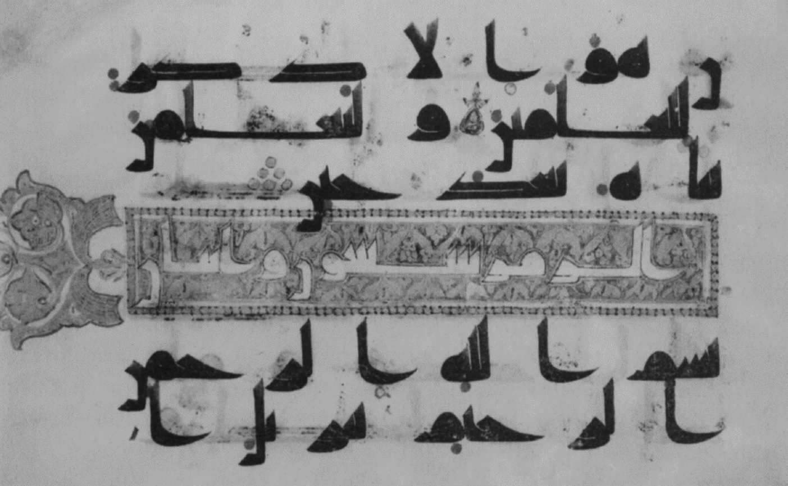

穆罕默德，中世纪最有影响的历史人物，生于约570年。6岁时母亲去世，先由祖父，后由伯父抚养长大。有关他青少年时期的情况所知很少。传说他12岁时曾随伯父跟商队去过叙利亚，在这次旅行中，可能获得一些有关犹太教和基督教的知识。穆罕默德25岁时同一位富孀结婚，她为他生了四个女儿和两个儿子，儿子都夭折了。
穆罕默德40来岁时，经历了一段精神极度紧张的时期；在此过程中，他开始相信上帝选他为先知，选他当亚伯拉罕、摩西和耶稣的继承人。有人要他描述默示经过，他回答说，《古兰经》的全部经文在天国里，每次他所得到的只是一部分，通常由天使加百列传授给他，并让他一字一句地重复。穆罕默德这时认为，他已接受了神的感召，要去证实安拉的唯一性和超然存在，去警告人们最后审判日终将来临，去告诫他们对忠实的报答是上天堂，对邪恶的惩罚是下地狱。

图76 公元8或9世纪用库法字体书写的《古兰经》的一页（23.8厘米×35.5厘米）。由于穆斯林讨厌图像，书法很早就成为伊斯兰教艺术的一种主要形式。阿拉伯字母表主要是为了使《古兰经》文本尽可能精确才发展起来的，于是，书法艺术也随之发展起来。这种横向拉长的库法字体作为《古兰经》最早和居支配地位的书法，持续了3个世纪。
穆罕默德的教诲，在他死后不久被记录成书，成为伊斯兰教这一新教的圣典。“伊斯兰”意为“顺服上帝的旨意”。穆罕默德没有建立教士组织，也没有确定专为拯救灵魂的具体圣事。但是，他的确要求信徒们履行某些仪式，即伊斯兰教的“五功”。它们是：
（1）念功，信徒一生必须完全理解、绝对接受地背诵“除安拉外，再无神灵；穆罕默德是安拉的使者”。
（2）拜功，信徒应每日礼拜5次，分别在晨、晌、晡、昏、宵5个时间内举行：脱掉鞋子，戴上头巾，在一张地毯上面朝麦加方向祈祷。
（3）课功，穆斯林应慷慨施舍，作为献给安拉的贡品和虔诚的行为。
（4）斋功，穆斯林必须在斋月每日从黎明到日落禁食。
（5）朝功，穆斯林一生如条件允许应朝觐麦加一次。
这些仪式为信徒们提供了一种特别强有力的社会纽带。他们一起祈祷、斋戒，一起为不太幸运的兄弟们承担责任；他们——富人和穷人，黄种人、白种人、棕种人和黑人——一起到麦加去朝觐。而且，《古兰经》还对虔诚徒众生活的各个方面，对风俗和卫生、结婚和离婚、商业和政治、犯罪及惩罚、和平与战争予以指导。因此，伊斯兰教既是一种宗教信仰，又是一种社会法规和政治制度。它不仅为信徒们提供宗教戒律，而且为个人和公众生活提供明确的指导。与基督教世界不同，伊斯兰教国家中并不存在世俗生活与宗教生活之间、现世与教会之间的严格区分。伊斯兰教认为，凡属于恺撒的就是属于神的，而凡属于神的也就是属于恺撒的。“沙里亚”，即圣典，直到近代仍是整个伊斯兰世界的国法，而且仍是伊斯兰国家的基本法。
穆罕默德渐渐说服人们皈依这些教义。首先是他的直系亲属和私人朋友，这些人后来作为“先知的同伴”，享有崇高的威望。随着这一小股皈依者的发展，麦加的富商开始感到惊恐，害怕穆罕默德的教义将削弱过去的宗教信仰和阻止朝拜者去麦加放有“黑石”的天房中做礼拜。由于反对势力的增长，穆罕默德应邀前往麦地那，即麦加以北约300英里处的商路上的一座绿洲城市。这里杂居着阿拉伯部落和犹太部落的居民，因此，穆罕默德被当作仲裁者受到欢迎。622年，穆罕默德移居麦地那，阿拉伯人称这一事件为“希吉拉”，伊斯兰教历则以这一年为纪元元年。
由于穆罕默德的教义主要基于犹太教的教义、传说和经典，他希望自己能作为麦地那犹太人的先知的继承者受到他们的欢迎，但麦地那犹太人嘲弄了他的要求。于是，穆罕默德转而反对他们，最终将他们驱逐出城，并把他们的财产分给了他的信徒。穆罕默德逐渐说服了麦地那的阿拉伯人接受他的宗教信仰，并以他的教义为基础，建立了一个神权政治国家。
穆罕默德以麦地那为基地，组织了对麦加商队的一次次袭击。这种袭击是阿拉伯游牧民普遍接受的一种经济活动。如今，他们聚集在“先知”的旗帜下，希望获得战利品，并顺便得到灵魂的拯救。到630年，穆斯林已十分强大，完全有能力占领麦加，因而，穆罕默德将收藏在麦加天房中的黑石定为伊斯兰教的主要圣物。就这样，他实现了和麦加商人的和解，从而维护了伊斯兰教的基本信条，并使其扎根于传统的阿拉伯习俗之中。到632年穆罕默德去世时，大多数阿拉伯部落——虽不是全部——已承认他至高无上的地位，并向他进贡。
穆罕默德已发现自己的祖国因存在许多地方性的偶像崇拜习俗而分裂。他给祖国留下了一个宗教和一部天启的经典，留下了一个具有良好的组织和武装、统治了整个半岛的社会和国家。一个世纪内，他的信徒们从胜利走向胜利，建立起一个横跨欧亚大陆的强大帝国，并传播了他的教义。如今，这一宗教以在全世界拥有10多亿信徒而自豪。